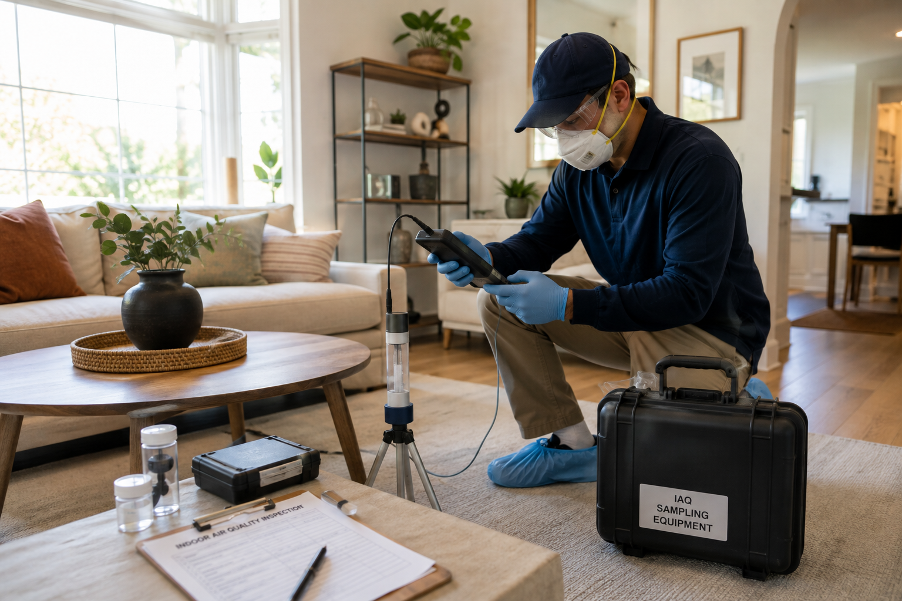
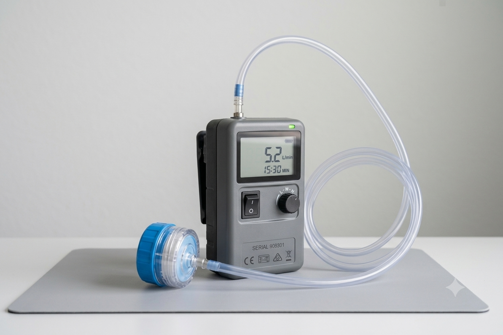

California Building Environment provides independent indoor air quality (IAQ) assessments for residential, commercial, industrial, educational, healthcare, and government facilities throughout Southern California.
Our evaluations include visual inspections, environmental assessments, and professional sample collection when appropriate. Samples are submitted to accredited laboratories for analysis.
Indoor air quality concerns can arise from a variety of environmental conditions, including moisture intrusion, inadequate ventilation, particulate matter, microbial growth, construction activities, or other building-related issues.
Our inspections evaluate the building environment, document observations, and collect representative samples when appropriate. Laboratory analysis is performed by accredited laboratories, and findings are summarized in a detailed inspection report.
Because we do not perform remediation services, our assessments remain independent and objective.

Indoor air quality assessments can help evaluate environmental conditions within a building. Every property is unique, and the scope of the assessment is based on the client's concerns and observed conditions.
Persistent odors may indicate hidden moisture problems, ventilation issues, or other environmental conditions that warrant further investigation.
Following plumbing leaks, flooding, or roof leaks, an indoor air quality assessment can help evaluate the effects of moisture on the indoor environment.
Property owners, tenants, employers, and facility managers often request assessments when indoor environmental concerns have been reported.
Office buildings, retail centers, schools, healthcare facilities, and industrial properties may benefit from periodic indoor environmental evaluations.
Indoor environmental assessments may be requested during commercial or residential property transactions to better understand existing conditions.
Following environmental remediation performed by another contractor, an independent assessment may help document current indoor conditions.
Discuss the property, occupant concerns, project objectives, and areas to be evaluated.
Perform a visual inspection of the property and evaluate building conditions that may influence indoor air quality.
When appropriate, representative environmental samples are collected and submitted to accredited laboratories for analysis.
Laboratory findings and inspection observations are documented in a detailed report to support informed decision-making.

Every assessment is customized to the property and project objectives. Common areas of evaluation include:
No. California Building Environment performs the inspection and collects representative environmental samples when appropriate. Samples are submitted to accredited laboratories for analysis, and laboratory results are included in the final report.
No. We provide independent environmental inspections and consulting only. Because we do not perform remediation or restoration services, our findings remain objective and unbiased.
Not necessarily. Every property is different. Depending on the inspection findings and your project goals, a visual assessment alone may be appropriate, while other situations may warrant air or surface sample collection.
The duration depends on the size of the property, accessibility, and the scope of the investigation. Residential assessments are typically shorter than large commercial or industrial projects.
Once laboratory analysis is complete, we prepare a detailed report documenting inspection observations, sampling locations, laboratory findings, and recommendations when applicable.
Indoor air quality assessments follow established standards and guidelines from federal and state agencies:
Our assessments follow ASHRAE standards for ventilation and indoor environmental quality.
California Building Environment provides independent indoor air quality assessments, environmental inspections, professional sample collection, and consulting throughout Southern California.